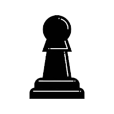

Keezen is een combinatie van Mens-er-je-niet-ergst en Pesten. Je speelt het met speelkaarten in plaats van een dobbelsteen.
Het doel is om als eerste al je pionnen veilig in het thuishonk te krijgen!
Dit is de digitale Control Hub om jouw zetten op het bord door te geven.
Heb je een speciale kaart (zoals de 7 of de Boer)? Dan opent er automatisch een speciaal scherm om je keuze in detail te maken.